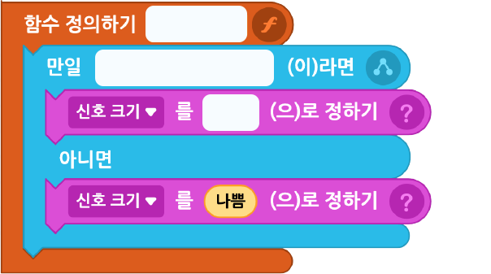

다음 실행 화면을 참고하여 와이파이 신호 세기 프로그램을 완성해 보자.
실행 화면
▲ 반환값이 “좋음”일 때
▲ 반환값이 “나쁨”일 때
- 오브젝트
-
와이파이
종이 접기 프레임
신호 크기 안내(글상자)
- 변수
-
신호 크기
- 함수
-
신호 크기
'신호 크기‘ 함수 만들기
아래 블록을 참고하여 프로그램을 작성해 보자.
신호 크기 함수

와이파이 신호 세기 프로그램 만들기
아래 블록을 참고하여 프로그램을 작성해 보자.
와이파이
이전
다음